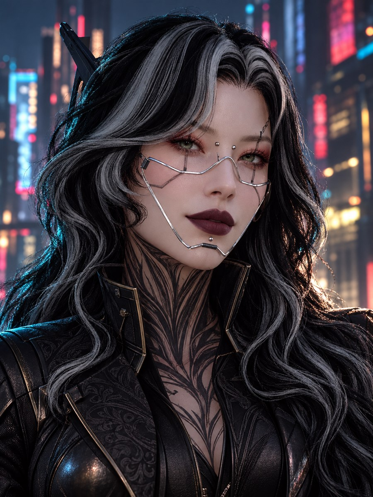

THE 3D STUDIO / FIRST EDITION
A different
perspective.
One character. Every angle.
A little closer to the world of Afterimage.
VAESSA / MINISKIRT — PURPLE 3D / 360°DRAG TO ROTATE · SCROLL OR PINCH TO ZOOM

READY WHEN YOU ARE
5.3 MB model · loads only when you open it.
Preparing Vaessa…A new perspective takes a moment.
The 3D view couldn't open.
Please try again on a WebGL-capable browser.
ORIGINAL NPV GEOMETRY / WEB MATERIAL ADAPTATIONWAITING TO LOAD
Vaessa’s original model and purple miniskirt appearance, adapted for the browser. Lighting and materials may look different from the game. Her full character story is waiting in the archive.
Back to the people